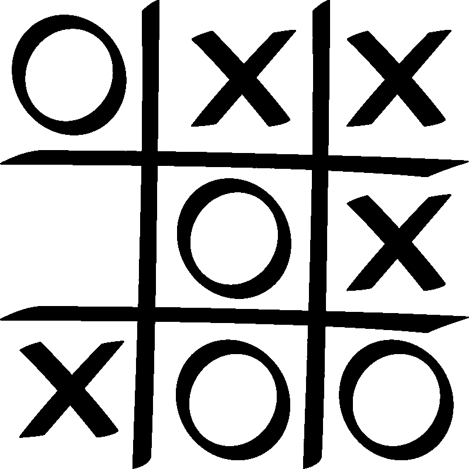

Games played on three-in-a-row boards can be traced back to ancient Egypt, where such game boards have been found on roofing tiles dating from around 1300 BC.
An early variation of tic-tac-toe was played in the Roman Empire, around the first century BC. It was called terni lapilli (three pebbles at a time)
and instead of having any number of pieces, each player had only three; thus, they had to move them around to empty spaces to keep playing.
The first print reference to a game called "tick-tack-toe" occurred in 1884,but referred to "a children's game played on a slate, consisting of trying with the eyes shut to bring the pencil down on one of the numbers of a set,
the number hit being scored"."Tic-tac-toe" may also derive from "tick-tack", the name of an old version of backgammon first described in 1558.
The US renaming of "noughts and crosses" to "tic-tac-toe" occurred in the 20th century.
In 1952, OXO (or Noughts and Crosses), developed by British computer scientist Sandy Douglas for the EDSAC computer at the University of Cambridge,
became one of the first known video games. The computer player could play perfect games of tic-tac-toe against a human opponent.
In 1975, tic-tac-toe was also used by MIT students to demonstrate the computational power of Tinkertoy elements.
The Tinkertoy computer, made out of (almost) only Tinkertoys, is able to play tic-tac-toe perfectly. It is currently on display at the
Computer History Museum.
